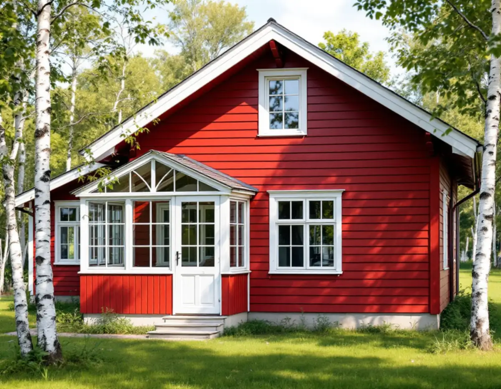
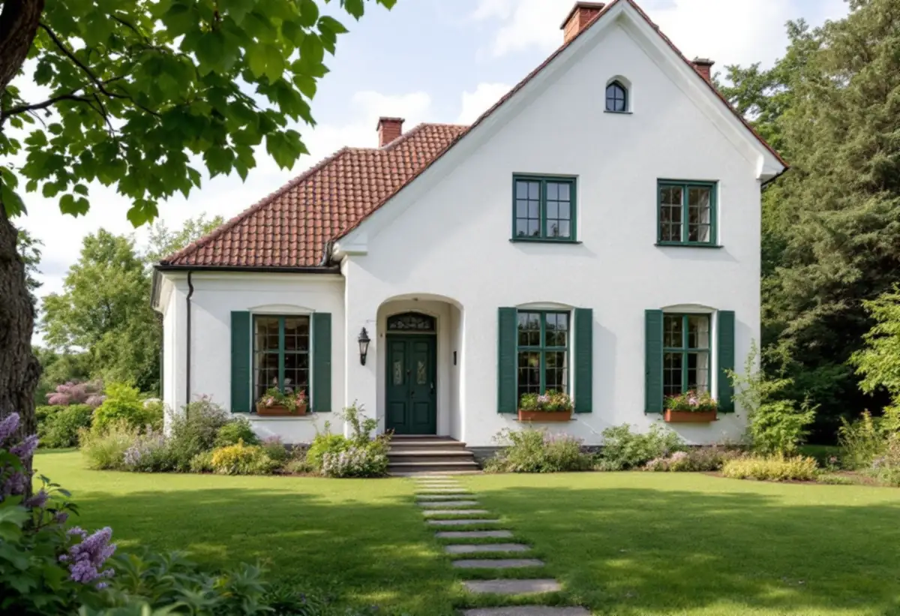

Besök på plats
Vi ser om fasaden är trä, puts eller tegel och provskrapar för att se vilken färg som sitter där.
En målare i Täby möter tre helt olika fasader: trävillorna från början av 1900-talet vid Roslagsbanan, de putsade villorna i Näsbypark och 1970-talets kedjehus med tegel och brun panel. Kommunens underlag beskriver kulörerna område för område. Vi målar fasader, fönster och rum i hela Täby, med gratis platsbesök och skriftligt kostnadsförslag.

Enligt kommunens underlag Kulturmiljöer i Täby växte en villastad fram kring järnvägsstationen i Täby kyrkby efter en avstyckningsplan från 1907. De äldre villorna har ofta liggande spontad panel, målad med falu rödfärg eller täckmålad i ljusa toner, och fönsterfoder, vindbrädor och knutar är oftast vita.
I Norra Viggbyholm, på båda sidor om Roslagsbanan, byggdes först mest sommarstugor och från 1930-talet allt fler villor. Där är träfasaderna täckmålade i ljusa kulörer eller avfärgade i falurött med foder i en kontrasterande färg, medan de putsade husen har milda pastellfärger. Riktlinjen är att den ursprungliga färgsättningen ska vara vägledande.
För målningen betyder det två system på samma hus: en färg för panelen och en annan för foder, knutar och vindskivor, ofta också en tredje för fönsterbågarna. Rödfärgad panel och täckmålad panel är dessutom olika färgtyper som inte ska blandas ihop.

Kulturmiljöunderlaget visar bland annat en villa i Näsbypark från 1926 med putsad fasad avfärgad i vitt och mörkt gröna fönstersnickerier. På en sådan fasad är det putsen och färgen på den som bestämmer metoden.
Riksantikvarieämbetets skrift om byggnadsmåleri förklarar att kalkfärg i dag främst används för att måla om tidigare kalkavfärgade ytor. Den fäster bra på kalkputs men dåligt på cementrika underlag, och den släpper igenom fukt. Färgen stryks ett skikt per dag och ska läggas utan avbrott på en fasadyta, annars syns skarvar; uppehåll görs bara vid hörn eller andra naturliga gränser. Utomhus görs arbetet från senvåren till eftersommaren, i god tid före frost.
Därför behöver en kalkputsad villa ett arbetslag som hinner en hel fasad i taget och en plan för vädret. Skador lagas med puts som liknar den befintliga innan färgen läggs på.
Kvarteret Kammaren från 1976 beskrivs i underlaget som ett ovanligt välbevarat kedjehuskvarter: bottenvåning i fasadtegel, gavlar i brunmålad stående panel och bruna fönstersnickerier. Riktlinjen är att behålla originalkulörerna och inte putsa över teglet. Den mörka färgsättningen beskrivs som typisk för tiden.
Kvarteret Ankaret i Näsbypark, radhus från 1968 som byggdes för officerare vid Sjökrigsskolan på Näsby slott, har vit kalksandsten och liggande panel i ljust grått. För de nyare husen vid slottet finns ett färgprogram som ska följas vid underhåll och ommålning. För grupphusområden i stort säger riktlinjerna att den ursprungliga färgsättningen bör behållas och att carport och altan inte ska bryta av i färg.
Vi målar panel, foder och snickerier och lämnar teglet orört. Ska en hel länga målas samtidigt stämmer vi av kulören med samfälligheten innan vi börjar.
Täby kommun skriver på sin sida om fasadändring att ett en- eller tvåbostadshus inte behöver bygglov för att byta kulör, så länge byggnaden inte är särskilt värdefull, inte ligger i ett särskilt värdefullt område och inte har utökad lovplikt i detaljplanen.
Kulturmiljöer i Täby antogs av kommunfullmäktige den 8 april 2024. Riktlinjerna är inte juridiskt bindande, men de ska vägleda kommunens beslut. Området närmast Näsby slott är byggnadsminne sedan 1943, och där krävs Länsstyrelsens tillstånd för ändringar som strider mot skyddsbestämmelserna.
Enligt Boverket är det inget kulörbyte att gå från linoljefärg till plastfärg, men ett sådant byte kan påverka husets karaktärsdrag och därmed vara lovpliktigt i ett värdefullt område. Mer om helhetsjobb finns under villarenovering.
Vi ser om fasaden är trä, puts eller tegel och provskrapar för att se vilken färg som sitter där.
Vi läser vad Kulturmiljöer i Täby och detaljplanen säger om just ditt område.
Du får ett skriftligt förslag där fasad, snickerier och invändiga rum står för sig.
Lös färg tas bort, puts och trä lagas, och ytor som inte ska målas skyddas.
Kalkputs målas en fasad i taget utan uppehåll; trä målas när det är torrt och inte i stark sol.
Vi går igenom resultatet med dig och skriver ner färgtyp och kulörer för framtida underhåll.
För en villa eller ett radhus som du äger räknar Skatteverket målning av fasad, fönster, väggar, tak, golv och element samt tapetsering som rotarbete. Avdraget är 30 procent av arbetskostnaden, högst 50 000 kronor per person och år, och ROT plus RUT får vara högst 75 000 kronor. Vi drar det direkt på fakturan.
I en bostadsrätt ger bara arbete inne i lägenheten avdrag, till exempel innerdörrar och insidan av fönster. Staket och murar ger inget avdrag.
Metoden styr mest. En kalkputsad fasad kräver flera strykningar och ett arbetslag som hinner en hel yta i taget, en trävilla med vita foder och spröjsade bågar tar tid i detaljerna, och ett kedjehus med tegel har mindre yta att måla. Därtill kommer hur mycket som behöver lagas.
Platsbesöket är gratis, och du får ett skriftligt kostnadsförslag innan vi bokar in arbetet.
Fasad, fönster och invändig målning.
Målare i Stockholm →Takbyte, takbesiktning och plåtarbeten.
Takläggare i Täby →Näsbypark, Viggbyholm och Gribbylund.
Takrenovering i Täby →Detaljplan, Q-märkning och VA-inkoppling.
Attefallshus i Täby →Kulör per kvarter och provytor.
Fasadmålning i Täby →Villastäder och grupphus i Täby.
Fönsterbyte i Täby →Stationsvillor, funkis och grupphus i Täby.
Plåtslagare i Täby →Betongpannor, kedjehus och tegelvillor.
Takbyte i Täby →Byle, kyrkbyn och detaljplanen.
Tillbyggnad i Täby →